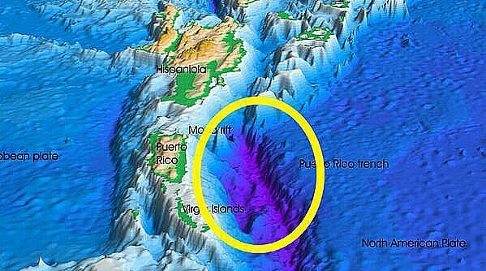

1) Oceano Atlântico é o segundo maior do mundo. Seu ponto mais profundo, a Fossa de Porto Rico, ou Milwaukee Deep, fica a 76 milhas da costa de Porto Rico, e tem 8.380 metros de profundidade.
2) Com um nível de salinidade que varia de 33 a 37 partes por mil, o Oceano Atlântico é mais salgado do mundo.
3) A profundidade média do oceano é de 4 km;
4) Todos os dias, 6 bilhões de quilos de lixo são jogados nos oceanos, sendo que a maioria é composta de plástico;
5) Se fosse possível capturar a energia cinética gerada pelas marés, satisfaríamos a atual demanda de energia do planeta em cinco vezes;
6) Em 1992, uma carga com 29 mil patos de borracha foi perdida no mar. Até hoje os patinhos são encontrados;
7)Há 20 milhões de toneladas de ouro nos oceanos do mundo;
8) Em Newfoundland, no Canadá, partes do Oceano Atlântico se congelam durante o inverno, e as pessoas jogam hockey sobre ele quando isso acontece;
9) No ponto mais fundo do oceano, a pressão da água equivaleria ao peso de 50 aviões jumbo em cima de uma pessoa;
10) Do oxigênio que respiramos, 70% é produzido pelos oceanos;
11)Os oceanos cobrem 71% da superfície terrestre
12) Das águas profundas do mundo, 95% continuam inexploradas;
13) Apesar de sua fama, o Triângulo das Bermudas tem a mesma quantidade de navios e aviões desaparecidos do que qualquer outra região oceânica;
14) Todos os anos, 10 mil containers de navios são perdidos nos oceanos, e 10% deles contêm cargas tóxicas que podem vazar eventualmente;
15) O pH dos oceanos vem diminuindo consideravelmente nos últimos anos; agora, só para você ter ideia, as águas do planeta são 30% mais ácidas do que eram em 1751;
16) Não tem problema fazer xixi na praia, já que 95% da urina é feita de água e que o nitrogênio da ureia é usado para alimentar as plantas oceânicas;
17)Harold Hackett é um homem que já jogou mais de 4,8 mil mensagens em garrafas no oceano e, desde então, recebeu mais de 3 mil respostas;
18)Antes da bússola, os Vikings navegavam pelo oceano com base na observação de pássaros, baleias e corpos celestes;
19) Daqui a três décadas, haverá mais plástico descartável do que peixes nos oceanos;
20) Águas-vivas são os nadadores mais eficientes de todos, conseguindo consumir até 48% a menos de oxigênio em relação a outros animais que nadam;
21) Ainda há muitos tesouros escondidos no fundo do mar: estima-se que o total de joias perdidas valha US$ 60 bilhões.